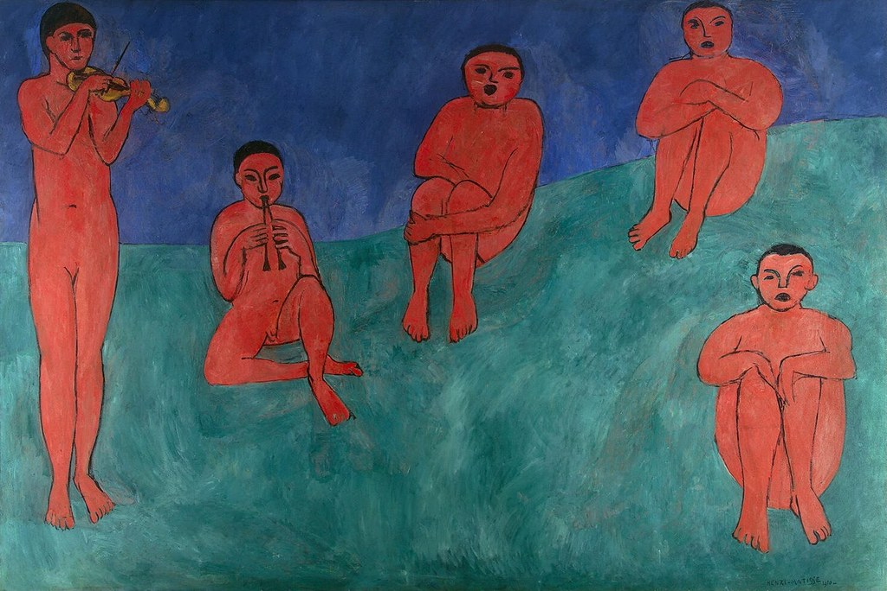
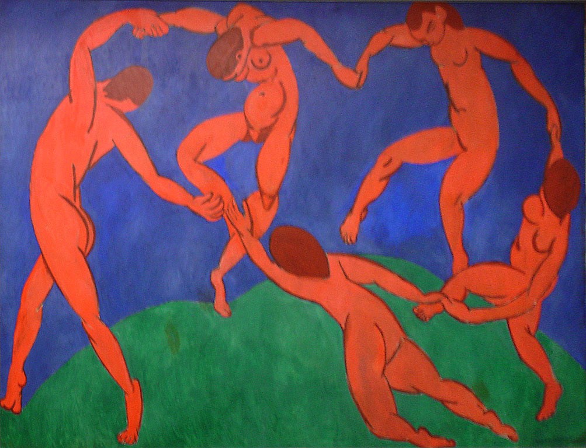

This painting, named "Music", dates from 1910 and it was presented at
the exhibition of the Salon d'Automne in Paris with his other famous artwork "Dance".
Both caused a scandal due to the fact that the respresentation of naked people was quite realistic.
Matisse usually used saturated color and flat picture for the trasmission of sensations, indeed both
these
paintings are made with this technique. Both are made without any preparatory sketches, and thus the
paintings bear many traces of modifications.
In "Music" the violinist has a very realistic pose, the artist achieved this purpose quite simply
because, as I said,
he used to play that musical instrument from his youth.
Looking at these two masterpieces we can also notice how "Music" has a static composition, while
"Dance" has energentic and dynamic characters: the result of putting them close is a perfectly
balanced composition.
The aim was to show man's achievement of a state of completeness by immersion in creativity.


"Joie de Vivre" is the name of this famous canvas painted in 1906.
Matisse wants to represent joy portraying an outside scenery in which some people relax, dance,
lay in the grass observing the landscape... and so on. The artist represents the same scene he
will paint in 1910 in Dance :
in the center we can see a group of six people dancing in a circular movement.
The purpose of the artist is to represent an oasis of relax, an idealized scenery where men can
find life's pleasure which is reached also with dance and music.